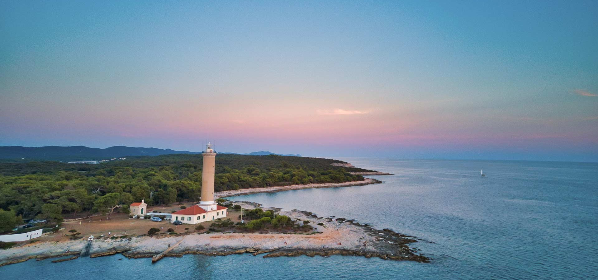
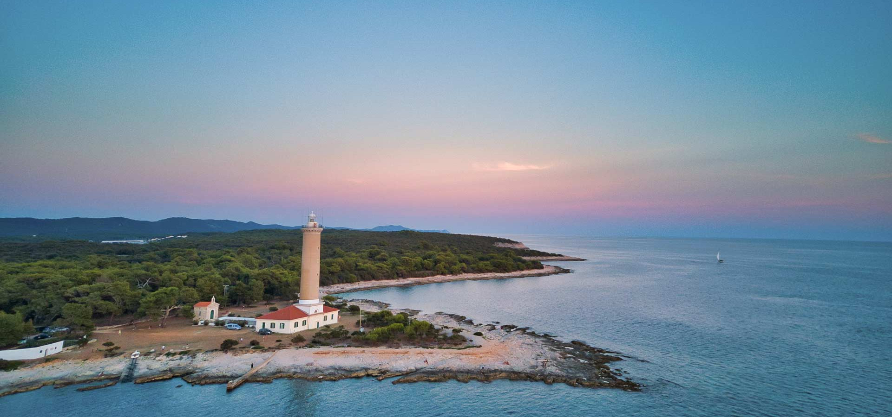
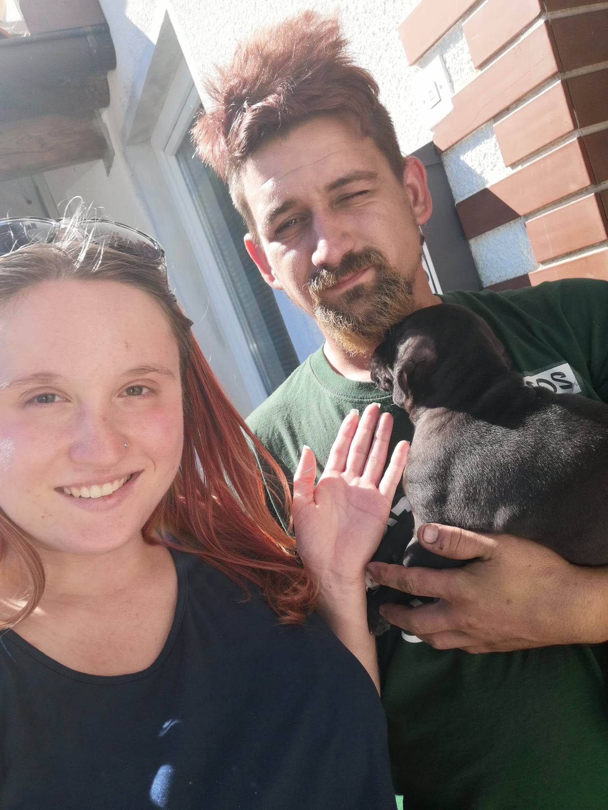
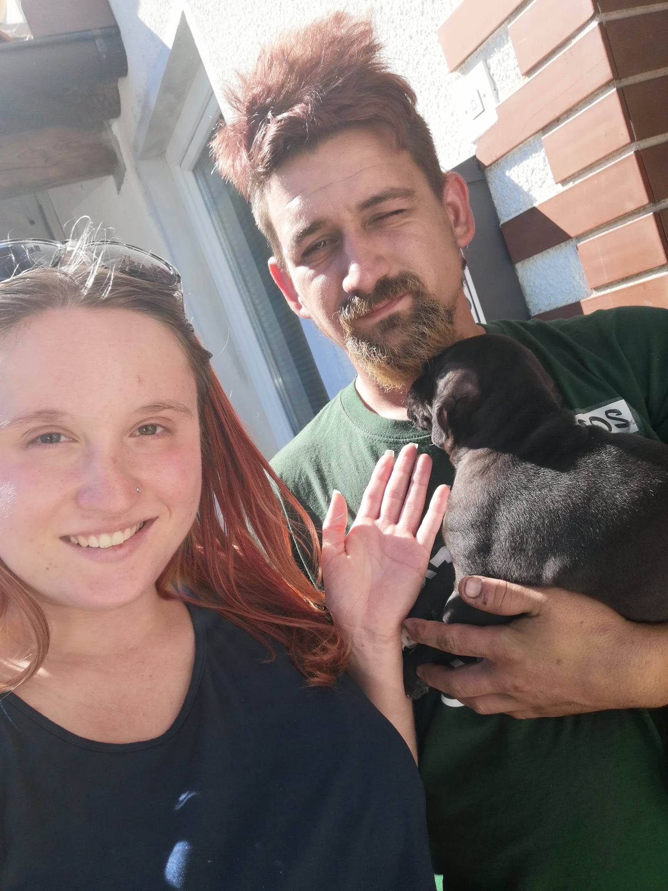

I got pregnant in December 2020. My boyfriend and I didn't live together at the time, so we were looking for an apartment of our own. We followed the ads, but the news about finding an apartment spread by word of mouth, and that's how we got a house in Lokavac. The house needed to be renovated inside. The boy arranged it himself with the help of his friend. We moved into the house on May 1 2021.
Both my boyfriend and I decided that when we are on our own, we will have a dog. He had an American Staffordshire terrier before, but this breed was foreign to me, I did not know a dog of this type. On the flea market, my boyfiend finds an ad that someone is selling puppies of this particular breed. He called the owner and arranged for one puppy. The owner said they were just born and gave the exact date to pick up the puppy. It was agreed that we would come to look for him sometime in mid-July. but unfortunately, because this puppy's mother gave birth to 13 puppies and fed them, she also discarded them prematurely. The owners had to feed the puppies. The owner called us if we could come pick up the puppy earlier. We went early in the morning at the end of June towards Ptuj, where the owner was located. It was quite a few hours of driving. Since we left early, we didn't have any traffic on the road. We couldn't wait to reach our final destination and meet our new member. Well, we reached our destination. We were met there by 13 beautiful puppies, one more beautiful than the other. They were also the mother and father of these puppies. The owner and his wife offered us drinks and brought our future member. He was so beautiful. A small black spot with a nice spot on the neck all the way to the belly. He also had one front and one hind paw colored white. Beauty itself. I got him in my arms first. He was so defiant, so gentle, he started licking me. We got to know each other well. Fanto and I stayed there for a while chatting with the owner and his wife. All the puppies were supposed to be sold that day so that buyers would keep coming. for the last time, the owner's wife gave our puppy to his mother to nurse a little, but she had to hold her, because the puppy's mother almost didn't let go because of the torture.
The boy took the cage to transport the puppy to the vet, which we put in the trunk. We put him in the cage and in the trunk, closed the trunk, said goodbye, got in the car, started the car and drove off with the new member. Just a few kilometers away from the house, the puppy started whining, whining so hard that I couldn't stand it and I told the boy to stop the car somewhere safe and let him out of the cage and he would be with us during the drive. I know it's not an ideal idea, and I could get in trouble with the police if they saw us, but I felt sorry for the puppy, because he's still small and it's something new for him, to go somewhere with strangers and he doesn't know , where. He also needed proximity. It was a little strange to have a dog. This was something new for me, as I used to have cats and was more of a cat person than a dog person. The youngster was a little restless and did not give peace. He climbed up the boy's neck and everywhere. I was driving, and I petted him here and there.
After a while we stopped at a gas station to stretch our legs and go to the toilet. There we see one family who also have a small dog. It was interesting because that day they also went to look for this little puppy, they took a cotton puppy. The boy and I put our member together with this other puppy to get to know each other and play. really interesting experience and adventure! Then we set off. The second destination was at the boy's grandparents. The boy wanted to show the new puppy and they gave us stuffed toys for our new member. The poor puppy was already a little tired, he also fell asleep. We ate lunch together with Fanot's grandparents, and then we headed home. We also stopped in between, of course. The puppy also had to relieve himself, and 2 hours to our home is a long drive.
We are finally at new home!!!
Because of the ride, the puppy only slept that day. He did a bit of exploring around the house when he was free, but that was all. My boyfriend and I set up his corner with a blanket. This day was the most beautiful thing for me. I was almost 7 months pregnant and how beautiful it will be to watch this puppy and baby grow up together. Even after this event, everything was different. With a puppy you have some responsibility, you are not alone, it is always waiting for you and it is always there for you and by your side.
This first night was also exciting for me and the boy. We had to get up and take the puppy out in the middle of the night. Well, he slept with us. The poor thing was whining. We barely calmed him down.
Well, we just got through the first night. In the morning we went to sea. I was a little worried about the puppy, because he didn't want to eat the briquettes that the boy bought him. He only drank and ate nothing. The only time I offered him the roast that my mother brought me, he ate. He only smelled salami, but he refused to eat briquettes.My boyfriend prepared snacks and cold cuts for me to eat. Otherwise, we met a couple at that time, whose partner also fishes, and my boyfriend agreed with him to go fishing together, and his wife will be with me and we will swim in the sea. The puppy was with me. He got used to it well, he was still playful. Passers-by were so impressed with the puppy. Alas, we named him Nero, but after a few days later. Well, my boyfriend was on the boat until late that day, so I returned home alone with the puppy. We had a quite peaceful journey, as the dog was also tired, and luckily there was no traffic on the highway. When we arrived home with the puppy, we had some time to ourselves to relax a little and so we were on the sofa, I was watching TV and I had the puppy on me, cuddling and caressing him. That was until my boyfriend came home.
It was something new, having a new member and going on vacation with him. The puppy brought so much happiness and joy to the house, we are never bored. I am very happy that my boyfriend and I took this particular puppy.

 

 
